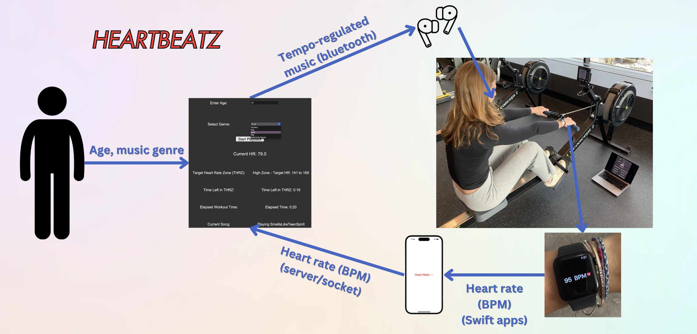

Shelby Fulton
HeartBeatz
This project was focused on exploring the effect of tempo-regulated music on motivation during exercise.
I completed this project during the Fall semester of 2024 along with two other partners in my Human-Computer Interaction class instructed by Professor Andrés Monroy-Hernàndez. The HeartBeatz system was developed using Python and Swift. The program was developed centered around users participating in High Intensity Interval Training (HIIT) workouts on the ergometer or rowing machine.
All the user needs to do is wear an Apple Watch, pair their Bluetooth headphones to the device HeartBeatz is running on, and input their age and preferred music genre. Music from the user's preferred genre will begin playing through their headphones and the workout will begin. Traditional to HIIT workouts, there are target heart rate zones (THRZ) that change throughout the workout. Appropriate THRZ are calculated for each user using their age provided. If the user's heart rate recorded by their Apple Watch is lower than the current THRZ, the music will be exponentially sped up, simulating motivation to increase ergometer intensity. Similarly, if the user's heart rate is above the current THRZ, the music will be exponentially slowed to influence the user to reduce intensity.
